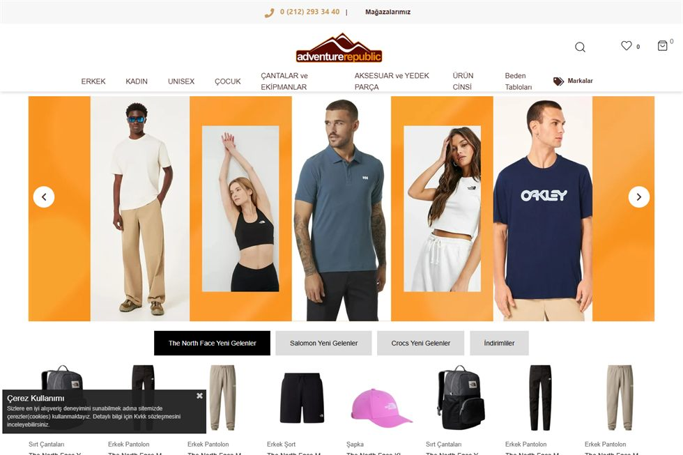
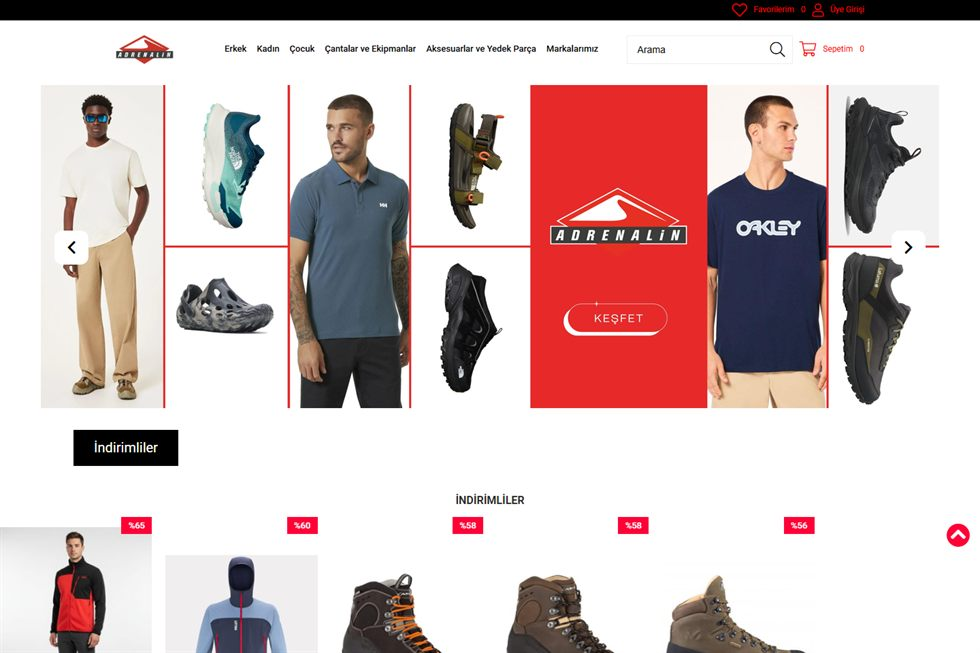
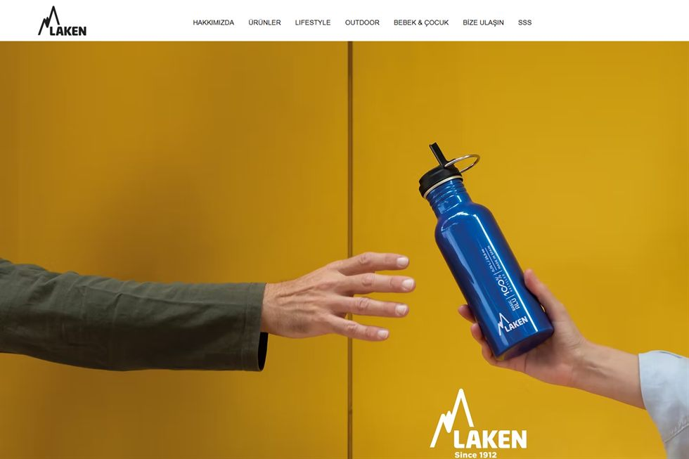

Hakkımda
Kısa profil
E-ticaret tarafında yalnızca teknik kurulum değil, satışa çıkan son deneyimi de yönetiyorum. Ürün akışı, stok, görsel, kategori, kampanya ve içerik tarafı birbirinden kopuk ilerlediğinde hız kaybı oluşuyor. Ben bu parçaları tek bir akışa bağlıyorum.
Çalıştığım yapıların ortak hedefi aynı: daha düzenli operasyon, daha temiz vitrin ve daha hızlı yayına alma. SEO ve içerik tarafında da satışa yaklaşan metinler hazırlıyorum.
Seçili İşler
Vaka çalışması formatında referanslar

Siteyi Aç ↗
Macera Cumhuriyeti
Ürün akışını yayına hazır hale getiren operasyon yönetimi
Nebim, Entegra ve Ticimax tarafındaki ürün akışlarını, içerik ve görsel hazırlığını tek süreç altında topladım.
Ne yaptım
Ürün girişi, kategori düzeni, görsel hazırlık ve satışa açılma kontrolü
Değer
Daha az hata, daha hızlı yayın ve daha temiz vitrin akışı

Siteyi Aç ↗
Adrenalin Outdoor
Entegrasyon, içerik ve görsel tarafını bir arada yönetme
Ürünlerin sisteme alınması, kategori kurgusu ve vitrin yapısını satış odaklı bir düzende ele aldım.
Ne yaptım
Ürün kartları, açıklamalar, görsel düzeni ve operasyon takibi
Değer
Daha anlaşılır ürün sunumu ve daha düzenli yayın süreci

Siteyi Aç ↗
Laken Türkiye
Dijital vitrin, içerik ve ürün düzeninde operasyon desteği
Görünürlük, vitrin düzeni ve ürün akışı tarafında satış odaklı bir yapı kurmaya katkı sağladım.
Ne yaptım
Vitrin yapısı, ürün görünürlüğü ve operasyonel düzenleme
Değer
Daha güçlü sunum ve daha kontrollü yayın akışı
Yetkinlikler
Hangi alanlarda güçlü olduğum
E-ticaret ve entegrasyon
Ürün, stok ve sipariş akışlarını yönetir; sistemler arasındaki kopukluğu azaltırım.
SEO ve içerik
Satışa yaklaşan, okunaklı ve görünürlüğü artıran ürün açıklamaları hazırlarım.
Görsel operasyon
Ürün fotoğrafı, görsel düzen ve AI destekli üretim tarafını toparlarım.
Teknik destek
POS, ERP ve günlük teknik sorunlarda operasyonu durdurmadan çözüm üretirim.
Araçlar
Kullandığım ekosistem
Entegra
Ticimax
Nebim V3
ProjeSoft
Wix
Vercel
Codex
Cursor
Claude
SEO
Python
AI araçları
Yaklaşım
Az bölüm, net mesaj, güçlü örnekler. Ziyaretçi ne yaptığını, hangi araçları kullandığını ve neden güvenebileceğini hızlıca anlamalı.
Süreç
Projelerde nasıl ilerlerim
Analiz
Mevcut yapı, ürün sayısı, entegrasyon akışı ve eksikleri hızlıca çıkarırım.
Kurulum
İçerik, görsel, kategori ve teknik akışları birlikte düzene sokarım.
Yayına alma
Son kontrolleri yapar, hataları temizler ve yayını güvenli hale getiririm.
İyileştirme
SEO, içerik ve operasyon takibiyle süreci yayın sonrasında da desteklerim.
İletişim
Birlikte çalışmak için ulaşabilirsiniz
E-ticaret operasyonu, entegrasyon, içerik ve görsel süreçleri için doğrudan iletişime geçebilirsiniz.
İsim
SezerTelefon
+90 538 724 93 58E-posta
sezeracipinars@gmail.comOdak
E-ticaret operasyonu, entegrasyon ve SEO